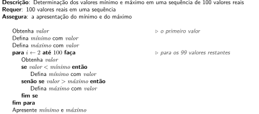

5 Problemas com repetições simples
5.1 Mínimos e máximos
Em uma competição os participantes são organizados equipes, cada uma sempre com 20 indivíduos.
Escreva um algoritmo para, dadas as alturas de cada indivíduo de uma equipe, apresentar o valor máximo entre elas.
Escreva um algoritmo que determine o valor mínimo em uma sequência (não vazia) de valores reais qualquer.
Considere o seguinte problema:
É preciso determinar os valores mínimo e máximo em uma sequência de 100 valores reais quaisquer.
Para esse problema, foram apresentadas duas soluções apresentadas a seguir.
Solução 1:
Solução 2:

Uma das soluções não funciona para todos os casos. Identifique o problema.
Dica: o problema surge em um caso bastante específico.
Preocupados com o aumento das ocorrências de trânsito, uma cidade do interior solicitou uma listagem contendo, para cada motorista (identificado pelo número de sua habilitação) e o valor total de suas multas nos últimos 12 meses. A lista não foi gerada obedecendo qualquer ordenação específica e motoristas que não possuem multas não são incluídos.
Escreva um algoritmo que processe essa lista, que contém número da CNH e valor de multas para cada um dos motoristas, e indique o valor máximo de multa, juntamente com a identificação do motorista. Em caso de empate (ou seja, dois ou mais motoristas com o mesmo valor máximo), apenas a primeira ocorrência deverá ser apresentada.
Considere que a lista contém, minimamente, pelo menos um motorista.
5.2 Contagens
Existe um relatório que contém, no topo da página, a quantidade de medidas de temperatura que foram feitas em um período arbitrário de tempo. Logo em seguida vêm as medidas individuais de temperatura, expressas em graus Celsius.
Escreva um algoritmo para processar os dados conforme descritos no relatório e apesentar, ao final, a quantidade de medidas negativas.
Para entender melhor o desempenho dos alunos em uma disciplina, o professor decidiu levantar duas informações que julga importantes: quantas notas foram iguais a zero e quantos alunos obtiveram média (ou seja, nota maior ou igual a 6,0).
Escreva um algoritmo para processar uma sequência de notas, todas de 0,0 a 10,0, e apresentar:
- a quantidade de notas maiores ou iguais a 6,0;
- a quantidade de notas iguais a zero;
- a quantidade total de notas.
Um professor precisa, para uma sequência de notas, verificar quantas são menores que 6 (abaixo da média) e quantas são nulas. Para isso, solicitou a um aluno que propusesse um algoritmo para resolver o problema e o resultado é apresentado a seguir.
A solução, porém, tem um erro de lógica que a leva a produzir um resultado final incorreto.
Identifique o erro e proponha uma solução.
Uma empresa possui os dados de venda de um mês inteiro em uma lista contendo os valores de cada venda. Como a lista pode ser longa e o final difícil de identificar, convencionou-se que sempre o último valor da lista é uma venda fictícia com valor R$ 0,00. Isso funciona para a empresa, visto que toda venda real possui valor maior que zero.
Escreva um algoritmo para, a partir da sequência de valores de venda terminada com zero, apresentar quantas vendas foram feitas no mês.
Lembre-se que o valor nulo final não deve ser contado.
5.3 Somas
Em uma competição, cada equipe de atletas é composta sempre por 20 participantes. Uma das premiações da competição considera o total de pontos obtido pela equipe, somando-se a pontuação de cada um de seus membro.
Escreva um algoritmo para, a partir de uma sequência contendo as pontuações totais de cada membro de uma equipe, apresentar o total de pontos que a equipe acumulou.
Uma empresa possui os dados de venda de um mês inteiro em uma lista contendo os valores de cada venda. Como a lista pode ser longa e o final difícil de identificar, convencionou-se que sempre o último valor da lista é uma venda fictícia com valor R$ 0,00. Isso funciona para a empresa, visto que toda venda real possui valor maior que zero.
Escreva um algoritmo para, a partir da sequência de valores de venda terminada com zero, apresentar o valor total das vendas do mês.
Uma empresa possui os dados de venda de um mês inteiro em uma lista contendo os valores de cada venda. Como a lista pode ser longa e o final difícil de identificar, convencionou-se que sempre o último valor da lista é uma venda fictícia com valor R$ 0,00. Isso funciona para a empresa, visto que toda venda real possui valor maior que zero.
Escreva um algoritmo para, a partir da sequência de valores de venda terminada com zero, apresentar quantas vendas foram feitas no mês.
Lembre-se que o valor nulo final não deve ser contado.
Um sistema automático de uma estação meteorológica coleta uma medida de precipitação, ou volume de chuva, (em mm) a cada cinco minutos, iniciando às 0h e finalizando às 23h55min. Esses valores são armazenados na ordem de coleta.
Para os analistas, são importantes os volumes de água acumulados nos seguintes períodos:
- das 0 às 5h55min;
- das 6 às 19h55min;
- das 20 às 23h55min.
Escreva um algoritmo para, a partir da sequência de medidas, apresentar os volumes acumulados nos três períodos especificados.
Para pensar: sua solução, para que seja entendida por outra pessoa, requer comentários específicos?